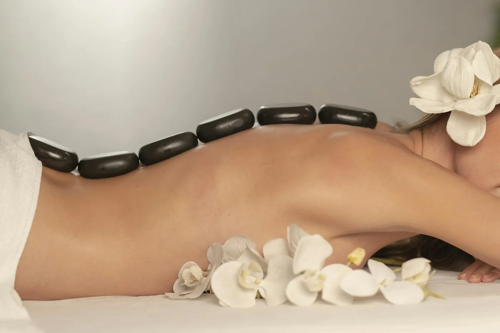
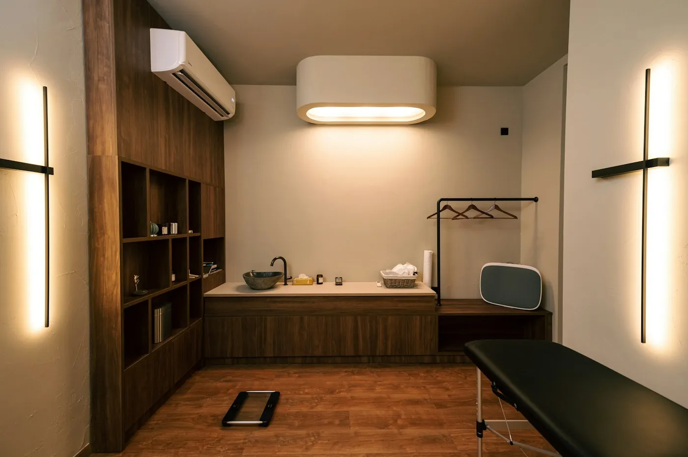
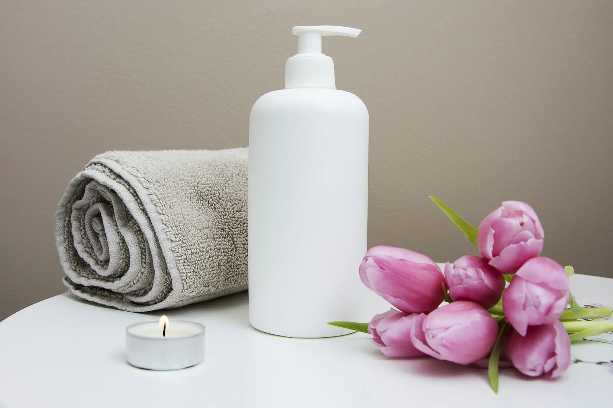

Criolipólise
Resfriamento controlado de áreas de gordura localizada. Não é tratamento para emagrecer.
- Duração
- 60 min por área
- Frequência
- Intervalo de 60 dias
- Avulso
- R$ 790
- No clube
- R$ 632

Glow Corpo · tratamento 05/05
Criolipólise, massagem modeladora e radiofrequência para gordura localizada, flacidez e celulite, com sessões que cabem no almoço.
Um ritual de cuidado
Tratamento corporal não substitui alimentação e movimento, e a gente fala isso na primeira conversa. O que ele faz é cuidar de áreas específicas, com técnica e acompanhamento.
A criolipólise só é feita depois de avaliação médica, porque não serve para todas as pessoas nem para todas as áreas. Massagens e radiofrequência são feitas por biomédicas esteticistas, com fichas de acompanhamento.


Cada plano começa numa avaliação de 40 minutos com médica ou biomédica e termina por escrito, com o preço de cada sessão.
Nada é no automático: o tratamento certo depende da sua pele, da sua rotina e do que você espera.
Medidas, histórico e expectativas conversadas antes da primeira sessão.
Sessões de 40 a 60 minutos em 11 unidades, de segunda a sábado até as 21h.
Preço por sessão, fora e dentro do clube. A indicação, a quantidade e a ordem das sessões são definidas na avaliação.
Resfriamento controlado de áreas de gordura localizada. Não é tratamento para emagrecer.
Pacote de 10 sessões, com drenagem linfática. Preço por sessão.
Aquecimento da pele com aparelho, usado para flacidez e celulite.
Os resultados variam de pessoa para pessoa e dependem da avaliação. Procedimentos injetáveis e lasers são feitos só por médicas. Responsável técnica: Dra. Marina Costa, CRM-SP 000.000 (exemplo).
Orientações gerais. Na avaliação você recebe as suas, por escrito, junto com o plano.
Não achou a sua dúvida? A equipe responde pelo WhatsApp em até 15 minutos, de segunda a sábado.
Falar com a genteNão. Ela atua em gordura localizada, em quem está perto do peso que deseja. A avaliação diz se é indicada para você.
O pacote tem 10, mas a frequência é combinada com você na avaliação.
A criolipólise causa desconforto pelo frio nos primeiros minutos. Massagem e radiofrequência são confortáveis.
Pode, em todos os tratamentos corporais.
Muitos planos combinam mais de uma linha. Ver todos os tratamentos.
Primeiro passo
40 minutos com médica ou biomédica, na unidade que você escolher. Você sai com um plano por escrito e decide com calma.